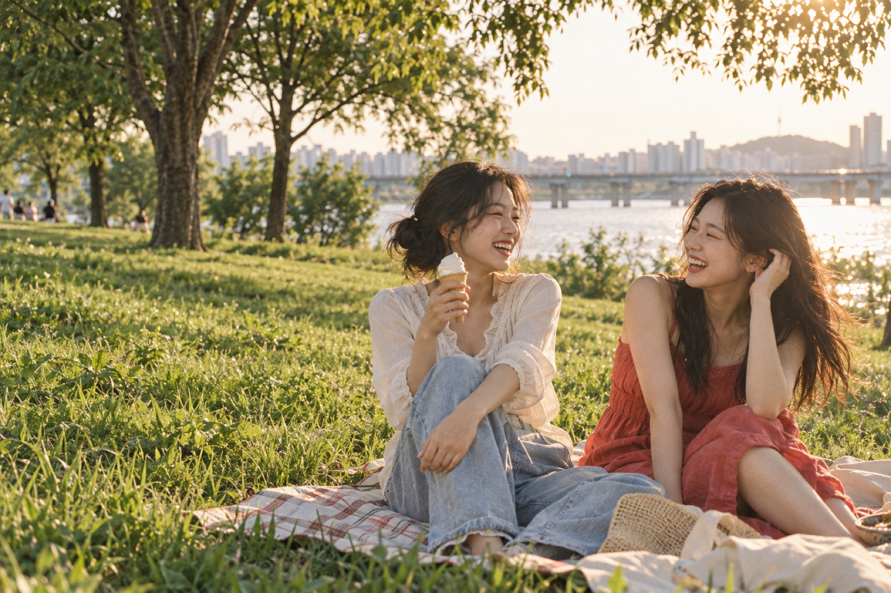
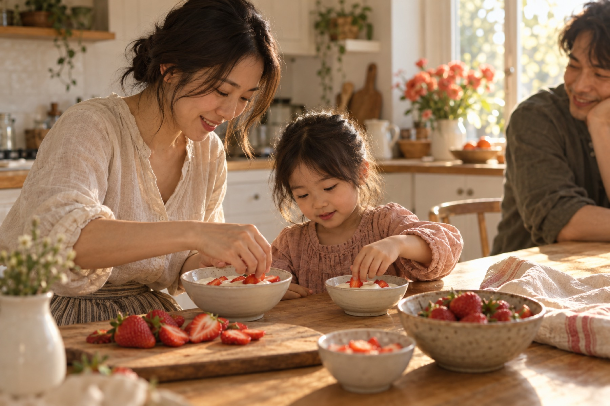

01 / WITH FRIENDS
웃다°
반가운 얼굴 하나면,
평범한 오후도 특별해져.
시시한 농담에도 웃음이 터지는 날.
좋아하는 한 입을 나누면, 그걸로 충분하죠.

좋은 맛이 좋은 기억이 되는 순간, 빙그레.
SCROLL TO EXPLORE ↘01 / 가까이에서 발견하는 마음
02 / THREE EVERYDAY SCENES
좋아하는 맛 옆에는,
좋아하는 사람이 있다.


01 / WITH FRIENDS
시시한 농담에도 웃음이 터지는 날.
좋아하는 한 입을 나누면, 그걸로 충분하죠.
02 / AROUND OUR TABLE
오늘 어땠어, 짧은 한마디와 달콤한 한 입.
함께하는 맛은 오래 남는 기억이 됩니다.
03 / A MOMENT FOR ME
바쁘게 달려온 하루에 잠깐의 여유.
익숙한 달콤함으로 나를 채우는 시간.
03 / THE LIVING ARCHIVE
시간은 흘러도, 가까이에서
즐거움을 전하고 싶은 마음은 그대로.
RECORD 01 / 13
19679월, 주식회사 대일양행 설립.

9월, 주식회사 대일양행 설립.
남양주시 도농동에 제1공장을 준공했습니다.
대일유업에서 빙그레로 사명을 변경했습니다.
빙그레 식품연구소를 열었습니다.
유음료 부문 HACCP 인증을 획득했습니다.
새로운 비전을 선포하며 다음 도약을 준비했습니다.
상하이에 현지 법인을 설립했습니다.
미국 법인을 설립하고, 한글 글꼴 빙그레체를 무료로 배포했습니다.
건강지향 통합 브랜드 TFT를 선보이고 베트남 법인을 설립했습니다.
해태아이스크림을 인수했습니다.
단백질 전문 브랜드 더:단백을 론칭했습니다.
호주 법인을 설립했습니다.
4월, 해태아이스 소규모 합병을 진행했습니다.
연혁 출처: 빙그레 공식 연혁 ↗
04 / FAMILIAR FAVORITES
시간을 건너, 오늘의 한 입으로.
당신의 익숙한 즐거움을 만나보세요.
좋은 날은, 생각보다 가까이에.
오늘도 빙그레.
당신의 평범한 하루가
조금 더 다정해지기를.